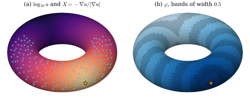
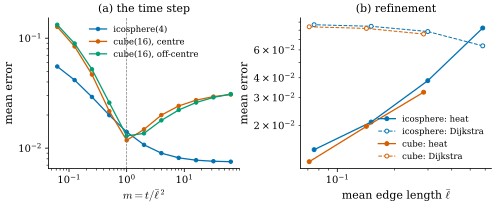
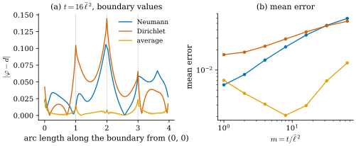

44.6 Geodesic Distance via the Heat Method
Goals
- 거리 함수가 eikonal equation \(\abs{\grad\varphi} = 1\)을 만족함을 증명하고, 그 방정식을 직접 풀기 어려운 이유를 말할 수 있다.
- heat method의 세 단계(backward Euler 한 step, gradient의 정규화, Poisson solve)를 이 study set의 \(L\)의 부호로 정확히 쓰고 구현할 수 있다.
- face마다 상수인 vector field의 integrated divergence의 cotan 식을 FEM의 weak divergence와 dual cell의 flux로 증명할 수 있다.
- time step, boundary condition, prefactorization이 정확도와 속도에 어떤 영향을 주는지 수치로 설명하고, Dijkstra 및 정확한 polyhedral distance와 비교할 수 있다.
Prerequisites
- Chapter 42: hat function의 gradient와 stiffness matrix(Lemma 42.3.2, Theorem 42.3.5), boundary condition(Proposition 42.5.7, Proposition 42.5.8), 닫힌 mesh의 Poisson solve(Proposition 42.6.1), heat equation의 backward Euler(Proposition 42.6.4), Cholesky의 재사용(Remark 42.6.3).
- hat function Definition 36.3.1과 그 gradient (36.3.1), dual cell을 지나는 flux Proposition 42.4.1.
- Section 44.2: Dijkstra(Implementation 상자)와 cube의 정확한 거리(Example 44.2.4). Section 44.5: geodesic의 존재(Proposition 44.5.5).
- Track 1: heat kernel과 heat method의 소개 Section 31.4, eikonal equation Section 30.1.
Motivation
Section 44.5는 한 점과 한 방향에서 geodesic 하나를 계산했다. 많은 응용에 필요한 것은 그보다 큰 양, 한 점(또는 점들의 집합)에서 모든 점까지의 거리다. Section 44.2의 Dijkstra는 빠르지만 metrication error가 줄지 않았고(Proposition 44.2.1), MMP는 정확하지만 구현이 복잡하고 비싸다. 이 절의 heat method는 Chapter 42에서 만든 두 linear system만으로 거리를 계산한다. Section 31.4가 결과와 직관을 소개했으니, 여기서는 이산화를 완전히 쓰고 그 정확도를 시험한다.
The Distance Function and the Eikonal Equation
complete surface \(S\)와 닫힌 집합 \(\gamma \subseteq S\)(한 점 또는 곡선)에 대해 \(\varphi(x) := \min_{y\in\gamma}d(x, y)\)를 \(\gamma\)에서의 거리 함수라 하자.
Proposition 44.6.1 (the distance function). (a) 모든 \(x, x'\)에서 \(\abs{\varphi(x) - \varphi(x')} \le d(x, x')\)이다. (b) \(\varphi\)가 \(x \notin \gamma\)에서 differentiable이면
이다(eikonal equation(아이코날 방정식), Section 30.1).
Proof. (a) \(y \in \gamma\)에서 \(d(x, y) \le d(x, x') + d(x', y)\)이므로 \(y\)에 대한 최솟값을 취하면 \(\varphi(x) \le d(x, x') + \varphi(x')\)이고, \(x\)와 \(x'\)을 바꾸어도 같다. (b) \(w \in T_xS\)와 \(\beta(0) = x\), \(\beta'(0) = w\)인 곡선에 대하여 (a)에서 \(\abs{\varphi(\beta(s)) - \varphi(x)} \le L(\beta|_{[0, s]}) = s\abs w + o(s)\)이므로 \(\abs{d\varphi_x(w)} \le \abs w\), 곧 \(\abs{\grad\varphi(x)} \le 1\)이다. 거꾸로, \(\gamma\)에서 \(x\)로 가는 shortest 곡선이 있다(Hopf–Rinow theorem, 받아들인다. \(\gamma\)가 compact이면 가장 가까운 \(y\)도 있다). 그것을 arc length로 매개화한 \(c\)(\(c(0) = y\), \(c(\ell) = x\), \(\ell = \varphi(x)\))의 부분도 shortest이므로 \(\varphi(c(s)) = s\)이다. \(s = \ell\)에서 미분하면 \(\inner{\grad\varphi(x)}{c'(\ell)} = 1\)이고, \(\abs{c'} = 1\)이므로 Cauchy–Schwarz에서 \(\abs{\grad\varphi(x)} \ge 1\)이다.
증명에서 \(\grad\varphi(x) = c'(\ell)\), 곧 거리 함수의 gradient는 출발점에서 오는 shortest geodesic의 방향이다. 그런데 eikonal equation만으로는 거리를 정하기 어렵다. 방정식이 nonlinear이고, 해가 미분 불가능한 곳(cut locus, Remark 44.2.8)이 반드시 생기며, 그곳을 허용하면 해가 하나가 아니다.
Non-example 44.6.2 (almost-everywhere solutions are not unique). 구간 \([0, 1]\)에서 \(\gamma = \{0, 1\}\)의 거리 함수는 \(\varphi(x) = \min(x, 1 - x)\)이고, \(x = \tfrac12\)(cut point)만 빼고 \(\abs{\varphi'} = 1\)이다. 그러나 \(\psi(x) = \min(x, \abs{x - \tfrac12}, 1 - x)\)도 \(\psi(0) = \psi(1) = 0\)이고 꺾이는 세 점만 빼고 \(\abs{\psi'} = 1\)이다. “거의 모든 곳에서 eikonal equation과 경계 조건을 만족한다”는 것만으로는 거리 함수가 정해지지 않는다. 올바른 해를 고르려면 viscosity solution(점성해) 같은 추가 조건이 필요하고, fast marching은 vertex를 거리 순서대로 확정해 이것을 강제한다(Section 44.2). 그 순서 때문에 계산이 순차적이 된다.
From Heat to Distance
heat equation \(\partial_tu = \Delta u\)는 linear이다. 점 \(y\)에 놓은 단위 열이 시간 \(t\) 뒤 \(x\)에 남기는 양 \(k_t(x, y)\)를 heat kernel(열핵)이라 한다(Section 31.4). 짧은 시간에 heat kernel은 거리를 안다. smooth한 compact surface에서
이다(Varadhan's formula [Varadhan67]. 진술만 한다). [Crane13]은 Riemannian manifold의 이 식(그 논문의 식 (1))에서 출발한다.
Example 44.6.3 (the heat kernel of the plane). 평면에서 \(k_t(x, 0) = (4\pi t)^{-1}e^{-\abs x^2/(4t)}\)이다. \(-4t\log k_t = \abs x^2 + 4t\log(4\pi t) \to \abs x^2\)이므로 (44.6.2)가 성립한다. 그러나 \(t\)가 작지 않으면 \(4t\log(4\pi t)\)만큼 틀린다. 반면 gradient는 \(\grad_xk_t = -\tfrac{x}{2t}k_t\)이므로
\[ -\frac{\grad k_t}{\abs{\grad k_t}} = \frac{x}{\abs x} = \grad\abs x \]
는 모든 \(t \gt 0\)에서 정확히 거리 함수의 gradient다. 열의 크기는 \(t\)에 따라 틀리지만, 그 방향은 틀리지 않는다.
Verification: verify/v-44-6-heat-method.py
휜 surface에서는 이것이 근사로만 성립한다. 짧은 시간의 열은 대략 \(c\,e^{-d^2/(4t)}\) 꼴이라 \(\grad u \approx -\tfrac{d}{2t}u\,\grad d\)이고, 앞의 양수 \(\tfrac{d}{2t}u\)는 정규화로 사라진다(Section 31.4의 논증, Exercise 31.4.5). 그다음 \(\grad\varphi\)가 그 방향 \(X\)에 가장 가까운 \(\varphi\)를 찾으면 된다. 이것이 heat method의 생각이다. eikonal equation의 nonlinear한 부분(\(\abs{\cdot} = 1\))을 정규화라는 face마다의 계산으로 옮기고, 나머지 두 단계를 linear system으로 남긴다.
The Heat Method on a Mesh
Definition 44.6.4 (heat method). triangle mesh, source vertex의 집합 \(\gamma\), time step \(t \gt 0\)에 대하여 다음 세 단계로 얻는 \(\varphi \in \R^{n_0}\)를 \(\gamma\)에서의 거리의 heat method(열 방법) 근사라 한다.
(II)는 face마다 계산하고, \(\grad u|_f = \sum_{i\in f}u_i\,\grad\lambda_i\)는 \(u\)의 piecewise linear 보간의 gradient이고((36.3.1): \(\grad\lambda_i = \mathbf{N}_f\times(\mathbf{x}_k - \mathbf{x}_j)/(2A_f)\)), (III)의 \(b\)는 아래 (44.6.4)의 integrated divergence다. 닫힌 mesh에서 (III)은 \((-L + aa^{\mathsf T})\varphi = -b\)(\(a = M\mathbf{1}\), Proposition 42.6.1)로 풀고, boundary가 있으면 (I)의 boundary 처리를 Example 44.6.12에서 정한다.
(I)은 heat equation의 backward Euler 한 step이다((42.6.2)에서 \(u^0 = M^{-1}\delta_\gamma\), 곧 각 출발점에 총량 \(1\)의 열). \(M - tL\)은 symmetric positive definite이므로(Proposition 42.6.4(a)) 해가 하나다. 한 step뿐인 것은 짧은 시간의 정확한 heat flow가 목적이 아니라 방향만 필요하기 때문이다. 모든 cotan weight가 양수인 connected mesh에서는 (I)의 해가 모든 vertex에서 양수다(Exercise 44.6.4). (II)의 분모가 \(0\)이 되는 face는 \(u\)가 face의 세 vertex에서 같은 값일 때뿐이고, 일반적인 mesh에서는 생기지 않는다.
이제 (III)의 오른쪽을 정한다. 연속 판의 목표는 \(\grad\varphi\)가 \(X\)에 가장 가까운 \(\varphi\), 곧 \(\int\abs{\grad\varphi - X}^2\,dA\)의 minimizer이고, 그 조건이 \(\Delta\varphi = \divg X\)이다(과제 A5가 이 유도를 연습으로 둔다). mesh에서는 \(X\)가 face마다 상수라 점마다의 divergence가 의미가 없다(Non-example 42.3.4와 같은 이유). 그래서 hat function으로 잰다.
Proposition 44.6.5 (integrated divergence of a piecewise constant field). face마다 상수인 tangent vector field \(X\)(\(X_f\)는 face \(f\)의 평면 안)에 대하여 \(b_i := -\int\inner{X}{\grad\lambda_i}\,dA\), 곧 \(b_i = -\sum_{f\ni i}A_f\inner{X_f}{\grad\lambda_i|_f}\)로 두자. 그러면
- (a) face \(f = (i, j, k)\)마다 \(-A_f\inner{X_f}{\grad\lambda_i}\)는 \(\tfrac12\big(\cot\theta_k\inner{e_{ij}}{X_f}\) \(+ \cot\theta_j\inner{e_{ik}}{X_f}\big)\)와 같고, 따라서
\[ \begin{aligned} b_i = \frac12\sum_{f = (i, j, k)\ni i}\Big(&\cot\theta_k\,\inner{e_{ij}}{X_f} \\ &+ \cot\theta_j\,\inner{e_{ik}}{X_f}\Big) \end{aligned} \tag{44.6.4} \]
- (b) \(b_i\)는 \(X\)가 vertex \(i\)의 dual cell \(C_i\)의 boundary를 지나 바깥으로 나가는 flux이다. dual cell은 face마다 \(e_{ij}\)의 중점에서 \(e_{ik}\)의 중점까지의 곡선으로 경계를 이루는 것이면 무엇이든 된다(barycentric, circumcentric, mixed).
- (c) \(\sum_ib_i = 0\)이다(boundary가 있어도 된다).
- (d) \(X = \grad w\)(piecewise linear 함수 \(w\)의 gradient)이면 \(b = Lw\)이다.
Proof idea: (a)는 \(\grad\lambda_i\)를 이웃한 두 edge의 조합으로 쓰는 항등식이다. (b)는 상수 vector field의 flux가 경로가 아니라 끝점에만 의존한다는 것이다.
Proof. (a) \(a = e_{ij}\), \(c = e_{ik}\)로 두자. \(\lambda_i\)는 \(\mathbf{x}_i\)에서 \(1\), \(\mathbf{x}_j\)와 \(\mathbf{x}_k\)에서 \(0\)인 affine 함수이므로 \(\inner{\grad\lambda_i}{a} = \inner{\grad\lambda_i}{c} = -1\)이다. 한편 \(\cot\theta_j = \inner{-a}{c - a}/(2A_f)\), 곧 \((\abs a^2 - \inner ac)/(2A_f)\)이고, \(\cot\theta_k = \inner{-c}{a - c}/(2A_f)\), 곧 \((\abs c^2 - \inner ac)/(2A_f)\)이다(\(\cot\theta = \cos\theta/\sin\theta\)이고 두 edge의 inner product가 \(\cos\), 넓이의 두 배가 \(\sin\)을 준다). 그러므로 \(Y := \cot\theta_k\,a + \cot\theta_j\,c\)에 대해
\[ \begin{aligned} \inner{Y}{a} &= \frac{(\abs c^2 - \inner ac)\abs a^2 + (\abs a^2 - \inner ac)\inner ac}{2A_f} \\ &= \frac{\abs a^2\abs c^2 - \inner ac^2}{2A_f} = \frac{(2A_f)^2}{2A_f} = 2A_f \end{aligned} \]
이고 같은 계산으로 \(\inner{Y}{c} = 2A_f\)이다. \(Y\)와 \(-2A_f\grad\lambda_i\)는 모두 face의 평면 안에 있고, 평면의 basis \(a, c\)와의 inner product가 같으므로 \(Y = -2A_f\grad\lambda_i\)이다. \(X_f\)와 inner product를 취해 \(2\)로 나누면 (a)이고, face에 대해 더하면 (44.6.4)이다. (b) face \(f\) 안의 dual cell의 경계 조각 \(\beta\)가 \(m_{ij} = \mathbf{x}_i + a/2\)에서 \(m_{ik} = \mathbf{x}_i + c/2\)로 간다고 하자. 상수 \(X_f\)의 flux \(\int_\beta\inner{X_f}{\mathbf{n}}\,ds\)는 \(\beta\)를 선분 \(m_{ij}m_{ik}\)로 바꾸어도 같다(두 곡선 사이의 영역에서 \(\divg X_f = 0\)이므로 divergence theorem). 선분의 방향은 \((c - a)/2 = (\mathbf{x}_k - \mathbf{x}_j)/2\)이고, \(\mathbf{x}_i\)는 그 왼쪽에 있으므로(face가 \((i, j, k)\) 순서로 반시계 방향) \(\mathbf{x}_i\)에서 멀어지는 단위 normal에 길이를 곱한 것은 \(-\mathbf{N}_f\times(\mathbf{x}_k - \mathbf{x}_j)/2 = -A_f\grad\lambda_i\)이다. 그러므로 flux는 \(-A_f\inner{X_f}{\grad\lambda_i}\)이고, face에 대해 더하면 \(b_i\)다. 같은 계산이 Proposition 42.4.1의 \(X = \grad u\)인 경우였다. (c) face마다 \(\sum_{i\in f}\grad\lambda_i = 0\)((36.3.1))이므로 \(\sum_ib_i = -\sum_fA_f\inner{X_f}{\sum_{i\in f}\grad\lambda_i} = 0\)이다. (d) \(b_i = -\sum_jw_j\int\inner{\grad\lambda_j}{\grad\lambda_i}\,dA\)이고 이것은 \(-\sum_jw_ja_{ij} = (Lw)_i\)이다(Theorem 42.3.5의 \((a_{ij}) = -L\)).
(b)의 “어떤 dual cell이든”이 이 식의 좋은 점이다. face마다 상수인 vector field의 flux는 dual cell의 꼭짓점이 circumcenter인지 무게중심인지에 무관하고, 그래서 obtuse triangle에서도 식이 그대로다. (d)는 (III)이 정확한 gradient를 정확히 되돌린다는 것이다. \(X\)가 어떤 \(w\)의 gradient이면 \(L\varphi = Lw\)에서 \(\varphi = w\) + 상수다.
Proposition 44.6.6 (step III is a least-squares fit). boundary가 없는 connected mesh에서 piecewise linear 함수 \(W_0\varphi\)(vertex 값 \(\varphi\))에 대한 \(J(\varphi) := \int\abs{\grad W_0\varphi - X}^2\,dA\)의 minimizer는 \(L\varphi = b\)의 해와 같고, 상수를 더한 것만큼 다르다. \(\mathbf{1}^{\mathsf T}b = 0\)이므로 해가 있다.
Proof. \(\grad W_0\varphi = \sum_i\varphi_i\grad\lambda_i\)이므로 \(J(\varphi) = \sum_{i,j}\varphi_i\varphi_ja_{ij}\) \(- 2\sum_i\varphi_i\int\inner{\grad\lambda_i}{X}\,dA\) \(+ \int\abs X^2\,dA\)이고, 이것은 \(-\varphi^{\mathsf T}L\varphi + 2\varphi^{\mathsf T}b + \text{const}\)이다(Theorem 42.3.5와 \(b\)의 정의). \(-L\)은 positive semidefinite이므로(Corollary 42.3.6) \(J\)는 convex이고, minimizer는 gradient \(-2L\varphi + 2b = 0\)인 점이다. \(\mathbf{1}^{\mathsf T}b = 0\)은 Proposition 44.6.5(c)이고, 해의 존재와 상수만큼의 유일성은 Proposition 42.6.1(a)이다.
boundary가 있는 mesh에서도 같은 계산이 boundary vertex의 행까지 그대로 성립한다. 곧 (III)은 아무 boundary 처리를 하지 않으면 자연스러운 Neumann 조건 \(\inner{\grad\varphi - X}{\mathbf{n}} = 0\)을 쓰는 것이다(Proposition 42.5.8과 같은 이유). Proposition 44.6.5(c)의 증명은 boundary를 쓰지 않으므로 이때도 \(\mathbf{1}^{\mathsf T}b = 0\)이고, \(L\varphi = b\)는 해를 갖는다(Proposition 42.5.10). 계산은 닫힌 mesh와 같은 \((-L + aa^{\mathsf T})\varphi = -b\)로 한다. Proposition 42.6.1의 증명은 \(L\)이 symmetric이고 kernel이 상수뿐이라는 것만 쓰기 때문이다.
Accuracy: Examples and Comparisons
Example 44.6.7 (refinement on the icosphere). icosphere(1)–(4)(\(\bar\ell = 0.582, 0.299, 0.151, 0.075\))의 북극 vertex에서 heat method(\(t = \bar\ell^2\))의 평균 오차는 \(0.083, 0.038, 0.021, 0.014\)이고 최대 오차는 \(0.187, 0.090, 0.050, 0.033\)이다. Dijkstra의 평균 오차는 \(0.064, 0.078, 0.085, 0.087\)로 세분할수록 오히려 커진다. icosphere(1)처럼 거친 mesh에서는 Dijkstra가 더 낫지만, 세분하면 heat method만 수렴한다.
Verification: verify/v-44-6-heat-method.py
Example 44.6.8 (the cube against the exact polyhedral distance).
ch44.unit_cube(n)(\(n = 4, 8, 16\))에서 바닥 가운데 vertex \((0.5, 0.5, 0)\)으로부터의 정확한 polyhedral distance는 펼침으로 계산한다(Example 44.2.4. cube에서는 MMP가 주는 값과 같다). heat method의 평균 오차는 \(0.032, 0.020, 0.012\), 최대 오차는 \(0.127, 0.090, 0.062\)이고, Dijkstra는 평균 \(0.076, 0.082, 0.084\), 최대 \(0.293, 0.298, 0.310\)이다. cube의 corner는 cone vertex이고 cut locus에 속하므로 거리 함수가 그곳에서 꺾인다(Figure 44.2.1). heat method의 \(\varphi\)는 매끈한 근사라서, 세 mesh 모두 최대 오차가 뚜껑의 corner(정확한 거리 \(\sqrt{2.5} = 1.581\))에서 생긴다.
Verification: verify/v-44-6-heat-method.py
Example 44.6.9 (the torus).
dgmesh.torus_mesh(2, 0.8, 32, 80)의 바깥 적도의 vertex에서 heat method를 쓰자(Figure 44.6.1). 정확한 거리를 모든 점에서 알지는 못하지만, 바깥 적도 위의 점까지는 안다. 적도는 geodesic이고 가까운 곡선보다 짧다(second variation의 부호, Exercise 44.6.3). 또 smooth torus에서 출발점의 모든 방향(4001개)으로 geodesic을 길이 \(3\)까지 쏘아 보면, 적도의 점 \(\mathbf{x}(0, \pi/4)\)에 닿는 것은 적도 자신(길이 \(2.1991\))뿐이다(verify). shortest 곡선은 geodesic이므로(Corollary 44.1.10) \(\abs v \le \pi/4\)인 적도 위의 점까지의 거리는 \((R + r)\abs v\)이다. 그 범위에서 heat method의 최대 오차는 \(t = \bar\ell^2\)에서 \(0.121\)이고 \(t = 4\bar\ell^2\)에서 \(0.071\)이다. 출발점을 안쪽 적도의 vertex \(\mathbf{x}(\pi, 0)\)으로 바꾸면 안쪽 적도 위의 점까지의 거리는 \((R - r)\abs v\)이고(어디서나 \(\rho \ge R - r\)이므로 \(v\)가 \(\abs v\)만큼 변하는 곡선의 길이는 \(\int\rho\abs{\dot v} \ge (R - r)\abs v\)이다), 그 최대 오차는 \(0.026\)이다. 바깥 적도의 오차는 \(\varphi\)가 거리보다 작은 쪽, 곧 \(\abs{\grad\varphi}\)가 \(1\)보다 조금 작은 쪽이다. 이 mesh는 바깥쪽 triangle이 tube 방향으로 \(0.157\), 둘레 방향으로 \(0.220\)인 직각삼각형이라, face마다의 \(X\)가 조금씩 흔들리고 (III)의 least-squares fit이 그 흔들림을 평균하며 크기를 잃는다. mesh를 \(48\times120\)으로 세분해도 \(t = \bar\ell^2\)의 오차는 \(0.110\)으로 천천히 준다. 아래 time step의 예가 이 현상과 이어진다.
Verification: verify/v-44-6-heat-method.py

dgmesh.torus_mesh(2, 0.8, 32, 80)(vertex 2560개)에서 바깥 적도의 vertex \(\mathbf{x}(0, 0)\)을 출발점으로 한 (44.6.3)의 세 단계(mixed Voronoi \(M\), \(t = \bar\ell^2 = 0.0322\), Example 44.6.9). 읽는 법: (a)의 색은 (I)의 \(\log_{10}u\)(밝을수록 크다), 하늘색 화살표는 앞쪽 face 일부의 \(X\)(길이 \(0.12\))이다. (b)의 색은 \(\varphi\)(진할수록 가깝다)이고, 너비 \(0.5\)의 밝고 어두운 띠가 \(\varphi\)의 등고선 역할을 한다. 시점은 elev \(38^\circ\), azim \(-25^\circ\)의 정사영이다. 볼 것: (a)에서 \(u\)는 출발점에서 멀어지며 여러 자릿수 줄지만, 화살표는 어디서나 출발점에서 멀어지는 방향이다. (b)의 띠는 tube를 감으며 퍼지고, 가장 먼 점의 \(\varphi\)는 \(7.33\)이다. 띠의 폭이 고르다는 것이 \(\abs{\grad\varphi} \approx 1\)이다. 본문과의 연결: Definition 44.6.4, Example 44.6.9. Interactive version(\(\varphi\)로 칠한 mesh).Figure 44.6.1의 (a)에서 색과 화살표를 따로 보자. 색은 \(u\)의 크기이고 출발점의 반대편에서는 출발점보다 여러 자릿수 작다. 그 크기를 Varadhan's formula에 그대로 넣으면 Section 31.4의 icosphere에서처럼 크게 틀린다. 화살표는 크기를 무시한 방향이고, 어디서나 출발점에서 멀어진다. (b)는 그 방향으로부터 (III)이 되살린 거리다. 띠가 바깥 적도 쪽에서 조금 넓어 보이는 것이 Example 44.6.9의 작은 \(\abs{\grad\varphi}\)이다.
Example 44.6.10 (the time step). \(t = m\bar\ell^2\)로 두고 \(m\)을 \(1/16\)에서 \(64\)까지 바꾸어 보자(Figure 44.6.2(a)). unit_cube(16)의 가운데 출발점에서 평균 오차는 \(m = 1/16, 1/4, 1, 4, 16\)에서 \(0.127, 0.047, 0.012, 0.020, 0.027\)이다. \(m\)이 너무 작으면 (I)의 해가 출발점 근처의 몇 ring에만 몰려 먼 곳의 \(u\)가 반올림 오차 수준이 되고 방향이 망가진다. \(m\)이 너무 크면 열이 넓게 퍼져 형태를 보지 못하고 방향이 “거리의 gradient”에서 “더 매끈한 무엇”으로 바뀐다. 그 사이에서 \(m = 1\)이 가장 좋다. icosphere(4)에서는 \(m\)이 커질수록 오차가 계속 줄어(\(m = 16\)에서 \(0.0078\)) 반대로 보이는데, sphere는 출발점에 대해 회전 대칭이라 어떤 \(t\)에서도 \(X\)가 meridian 방향이기 때문이다. 대칭인 예만으로 \(t\)를 고르면 안 된다. 이 study set은 Section 31.4처럼 \(m = 1\)을 기본값으로 쓴다. [Crane13 §3.2.4]도 \(t = h^2\)을 기본값으로 쓰고, 고정된 mesh에서 \(t\)를 줄인다고 정확해지지는 않는다고 적는다.
Verification: verify/v-44-6-heat-method.py
Example 44.6.11 (heat method versus Dijkstra under refinement). Figure 44.6.2(b)는 Example 44.6.7과 Example 44.6.8의 평균 오차를 평균 edge 길이에 대해 그린 것이다. heat method의 오차는 \(\bar\ell\)의 거듭제곱으로 줄고(icosphere(2)–(4)와 cube 세 개 모두 log–log에서 맞춘 기울기가 약 \(0.73\)), Dijkstra는 \(0.08\) 근처에 머문다. 정확한 polyhedral distance(MMP)는 mesh 자체의 거리를 오차 없이 주지만, smooth surface의 근사로서는 그것도 mesh의 오차를 가진다. 계산 비용은 Dijkstra가 heap으로 \(O(n_0\log n_0)\), MMP가 최악 \(O(n_0^2\log n_0)\)(slide 22)이다. heat method는 sparse Cholesky factorization 두 번을 미리 해 두면 출발점마다 triangular solve 네 번으로 끝난다(Remark 42.6.3). 이 study set은 dense 행렬을 쓰므로 그 장점을 숫자로 보이지 않는다.
Verification: verify/v-44-6-heat-method.py

Figure 44.6.2의 (a)에서 V자의 왼쪽 가지를 보자. \(m\)을 \(1/16\)로 줄이면 오차가 열 배로 커진다. \(t\)가 \(\bar\ell^2\)보다 훨씬 작으면 열이 한 step 동안 한두 ring밖에 퍼지지 못하고, 그 바깥의 \(u\)는 \(t\)의 거듭제곱으로 작아져 방향 정보가 사라진다. 오른쪽 가지는 반대로 열이 너무 퍼진 경우다. (b)의 두 실선은 거의 평행하게 내려간다. 서로 다른 두 surface에서 같은 수렴이 보인다.
Boundary Conditions
boundary가 있는 mesh에서는 (I)의 boundary condition을 정해야 한다. 아무것도 하지 않으면 zero Neumann이다(Proposition 42.5.8). 열이 boundary에서 반사되어 boundary 근처의 \(u\)가 커지고, 등고선이 boundary에 수직으로 휜다. boundary에서 \(u = 0\)(Dirichlet, Proposition 42.5.7)이면 열이 빠져나가 등고선이 boundary와 나란하게 휜다. 두 오차는 반대 방향이다. 그래서 두 해의 평균 \(u = \tfrac12(u_N + u_D)\)를 쓰면 서로 상쇄되기를 기대할 수 있다. 이것이 [Crane13 §3.4]가 권하는 averaged boundary condition이다. Crane13은 정확한 거리(\(t \to 0\)의 극한)에는 zero Neumann이든 zero Dirichlet이든 충분하고, boundary 처리가 결과를 바꾸는 것은 큰 \(t\)로 얻는 smoothed distance라고 적는다. (III)은 언제나 자연스러운 Neumann 조건이다(Proposition 44.6.6 뒤의 문단).
Example 44.6.12 (a planar square).
unit square의 dgmesh.grid_mesh(\(32\times32\)칸, 대각선이 엇갈리는 pattern)에서 vertex \((0.25, 0.375)\)를 출발점으로 하자. square는 convex이므로 정확한 거리는 유클리드 거리다. \(t = \bar\ell^2\)에서 평균 오차는 Neumann \(0.0060\), Dirichlet \(0.0170\), 평균 \(0.0070\)이고, \(t = 16\bar\ell^2\)에서는 \(0.0334\), \(0.0372\), \(0.0029\)이다(Figure 44.6.3). \(t = \bar\ell^2\)에서는 Neumann만으로도 평균보다 조금 낫고, \(t\)가 클수록 평균의 효과가 커서 \(m \ge 4\)(Figure 44.6.3(b)의 범위 \(m \le 64\))에서는 평균이 언제나 가장 좋다. 큰 \(t\)에서 평균을 권하는 Crane13 §3.4와 맞는 결과다. 같은 mesh의 Dijkstra는 평균 오차 \(0.025\)이다.
Verification: verify/v-44-6-heat-method.py

Figure 44.6.3의 (a)에서 파랑과 주홍의 가장 큰 봉우리가 같은 자리, 곧 출발점에서 가장 먼 corner \((1, 1)\)에 있다는 데 주의하자. 그곳에서 Neumann은 열을 가두고 Dirichlet은 내보내므로 \(X\)가 반대쪽으로 기운다. 평균은 그 둘을 상쇄한다. 정확한 상쇄를 보장하는 정리가 아니라 수치로 확인한 효과라는 것도 기억하자. (b)에서 평균의 곡선도 \(m\)이 아주 크면 다시 올라간다.
Prefactorization and Extensions
Remark 44.6.13 (prefactorization).
(I)의 \(M - tL\)과 (III)의 \(-L + aa^{\mathsf T}\)는 출발점에 의존하지 않는다. 두 행렬을 한 번 Cholesky factorization해 두면(Remark 42.6.3, lib/ch44.py의 HeatMethod) 출발점마다의 비용은 triangular solve 네 번과 face마다의 계산뿐이다. 출발점을 바꾸어 가며 거리를 여러 번 구하는 응용(모든 쌍의 거리, 대화형 도구)에서 이것이 heat method의 실용적인 장점이다 [Crane17]. heat method의 \(\varphi\)는 출발점과 도착점을 바꾸면 조금 달라진다. 정확한 거리 \(d(x, y) = d(y, x)\)와 달리, 근사는 symmetric이 아니다(Exercise 44.6.6).
Remark 44.6.14 (extensions). 같은 생각은 다른 이산화(polygon mesh, point cloud)와 다른 양으로 확장된다. vector heat method [Sharp19]는 vector를 짧은 시간의 vector heat flow로 퍼뜨려 parallel transport를 근사하고, 그것으로 만든 radial field와 그 Poisson 적분(이 절의 (III)과 같은 단계)으로 logarithm map을 mesh 전체에서 계산한다(Remark 44.4.14). 보충 강의 HM1, HM2는 영상만 있고 이 study set은 강의 영상을 볼 수 없으므로, 이 확장들은 논문 제목 수준으로만 소개한다.
Summary
- 거리 함수는 1-Lipschitz이고 미분 가능한 곳에서 \(\abs{\grad\varphi} = 1\)이다(Proposition 44.6.1). 이 nonlinear equation은 거의 모든 곳의 해가 하나가 아니라 직접 풀기 어렵다.
- heat method는 \((M - tL)u = \delta_\gamma\), \(X = -\grad u/\abs{\grad u}\), \(L\varphi = b\)의 세 단계이고 최솟값을 \(0\)으로 옮긴다(Definition 44.6.4). 열의 크기는 틀려도 방향은 맞다.
- integrated divergence (44.6.4)는 weak divergence이자 어떤 dual cell을 지나는 flux이고, 합이 \(0\)이며 gradient를 정확히 되돌린다(Proposition 44.6.5). (III)은 \(\int\abs{\grad\varphi - X}^2\)의 minimizer다(Proposition 44.6.6).
- \(t = \bar\ell^2\)은 대칭이 아닌 mesh에서 좋은 절충이다. boundary에서는 Neumann 해와 Dirichlet 해의 평균이 큰 \(t\)에서 특히 좋다. 세분하면 heat method는 수렴하고 Dijkstra는 수렴하지 않는다.
- 두 행렬은 출발점에 무관하므로 한 번 factorization하면 출발점마다 빠르게 다시 풀 수 있다.
다음 장에서는 거리 대신 vector를 옮긴다. geodesic을 따라 vector를 평행이동하는 것을 mesh 전체에서 일관되게 정할 수 있는가? angle defect가 그 장애물이고, 그것을 피하거나 이용해 원하는 singularity를 가진 vector field를 만드는 것이 Chapter 45의 주제다.
Exercises
Exercise 44.6.1 ★ 한 변이 \(1\)인 정삼각형 \(f = (i, j, k)\)와 상수 vector field \(X_f = (1, 0)\)(\(\mathbf{x}_i = (0, 0)\), \(\mathbf{x}_j = (1, 0)\), \(\mathbf{x}_k = (\tfrac12, \tfrac{\sqrt3}2)\))에 대해 세 corner의 기여 (44.6.4)를 구하고 합이 \(0\)임을 확인하여라.
Solution
모든 각이 \(\pi/3\)이라 \(\cot = 1/\sqrt3\)이다. corner \(i\): \(\tfrac12\cdot\tfrac1{\sqrt3}(\inner{(1, 0)}{X} + \inner{(\tfrac12, \tfrac{\sqrt3}2)}{X})\) \(= \tfrac{1}{2\sqrt3}\cdot\tfrac32 = \tfrac{\sqrt3}{4} = 0.4330\). corner \(j\): \(e_{jk} = (-\tfrac12, \tfrac{\sqrt3}2)\), \(e_{ji} = (-1, 0)\)이므로 \(\tfrac{1}{2\sqrt3}(-\tfrac12 - 1) = -\tfrac{\sqrt3}{4}\). corner \(k\): \(e_{ki} = (-\tfrac12, -\tfrac{\sqrt3}2)\), \(e_{kj} = (\tfrac12, -\tfrac{\sqrt3}2)\)이므로 \(\tfrac{1}{2\sqrt3}(-\tfrac12 + \tfrac12) = 0\). 합은 \(0\)이다(Proposition 44.6.5(c)). \(X\)가 \(i\)에서 \(j\) 쪽을 향하므로 \(i\)에서는 나가고(\(+\)) \(j\)에서는 들어온다(\(-\)). \(k\)는 \(X\)에 대해 \(i\)와 \(j\)의 가운데에 있어 \(0\)이다. 각 값은 \(-A_f\inner{X}{\grad\lambda}\)와 같다(\(A_f = \sqrt3/4\), \(\grad\lambda_i = (-1, -1/\sqrt3)\)).
Exercise 44.6.2 ★ Example 44.6.3에서 \(t = 0.01\), \(\abs x = 1\)일 때 Varadhan의 근사 \(\sqrt{-4t\log k_t}\)의 오차를 구하여라. 같은 \(t\)에서 정규화한 gradient의 방향 오차는 얼마인가?
Solution
\(-4t\log k_t = \abs x^2 + 4t\log(4\pi t)\)이고 이것은 \(1 + 0.04\log(0.12566) = 0.91703\)이므로 근사는 \(\sqrt{0.91703} = 0.9576\)이고 오차는 \(0.0424\)이다. 방향은 \(x/\abs x\)로 정확하므로 오차가 \(0\)이다. 크기에 섞인 \(\log(4\pi t)\) 항은 거리와 무관한 상수 인자 \((4\pi t)^{-1}\)에서 오고, gradient를 정규화하면 상수 인자는 사라진다.
Exercise 44.6.3 ★★ torus \((R, r) = (2, 0.8)\)의 바깥 적도에서 \(v\)의 차가 \(v_1\)인 두 점을 적도의 호로 잇는 곡선이 \(u = a\sin(\pi v/v_1)\) 꼴의 작은 변형에 대해 길이가 최소임을 \(v_1 \lt \pi\sqrt{r/(R + r)}\)일 때 보여라. Example 44.6.9의 \(\abs v \le \pi/4\)는 이 범위인가?
Solution
곡선 \(v \mapsto \mathbf{x}(u(v), v)\)의 길이는 \(\int_0^{v_1}\sqrt{r^2u'^2 + (R + r\cos u)^2}\,dv\)이다. \(u\)가 작으면 \(R + r\cos u \approx (R + r) - ru^2/2\)이고 \(\sqrt{A^2 + \varepsilon} \approx A + \varepsilon/(2A)\)이므로 길이는 \((R + r)v_1 + \int(-\tfrac r2u^2 + \tfrac{r^2}{2(R + r)}u'^2)\,dv\)(\(a^2\)의 차수까지)이다. \(u = a\sin(\pi v/v_1)\)이면 \(\int u^2 = a^2v_1/2\), \(\int u'^2 = a^2\pi^2/(2v_1)\)이므로 변화는 \(\tfrac{a^2v_1}{4}\big(-r + \tfrac{r^2\pi^2}{(R + r)v_1^2}\big)\)이다. 이것이 양수인 조건이 \(v_1^2 \lt r\pi^2/(R + r)\), 곧 \(v_1 \lt \pi\sqrt{0.8/2.8} = 1.679\)이다. Example 44.6.9의 두 점은 출발점(\(v = 0\))과 \(\abs v \le \pi/4\)인 적도의 점이므로 \(v_1 \le \pi/4 = 0.785\)이고 이 범위다. (이것은 한 family의 2차 조건이므로 국소적인 확인이다. 전역적인 확인은 Example 44.6.9의 수치 계산이 한다.)
Exercise 44.6.4 ★★ 모든 cotan weight가 양수인 connected mesh(예: Delaunay mesh)에서 (I)의 해 \(u = (M - tL)^{-1}\delta_\gamma\)가 모든 vertex에서 양수임을 보여라. [힌트: \(M - tL\)의 대각 밖 성분의 부호]
Solution
\(A := M - tL\)의 대각 밖 성분은 \(-tL_{ij} \le 0\)이고 대각은 \(m_i + t\sum_jL_{ij} \gt 0\)이며 \(A\)는 symmetric positive definite이다. 이런 행렬(Stieltjes matrix)의 역행렬은 모든 성분이 \(0\) 이상이고, 그래프가 connected이면 양수다. 짧은 증명: \(u\)의 최솟값이 vertex \(i\)에서 음수라 하자. \(i\)의 식은 \(m_iu_i + t\sum_jL_{ij}(u_i - u_j) = (\delta_\gamma)_i \ge 0\)인데 왼쪽의 첫 항은 음수이고 둘째 항은 \(u_i \le u_j\)이므로 \(0\) 이하라 모순이다. 곧 \(u \ge 0\)이다. \(u_i = 0\)인 vertex가 있으면 같은 식에서 이웃이 모두 \(0\)이어야 하고(\(L_{ij} \gt 0\)), connected이므로 전부 \(0\)이 되어 출발점의 식 \(m_su_s + \cdots = 1\)에 어긋난다. 그러므로 \(u \gt 0\)이다. cotan weight가 음수인 edge가 있으면 이 증명은 깨지고, 실제로 \(u\)가 음수인 vertex가 생길 수 있다. (II)는 \(u\)의 부호를 쓰지 않으므로 방법 자체는 동작한다.
Exercise 44.6.5 ★ 참인지 거짓인지 말하고 이유를 써라. (a) heat method의 (III)에서 \(X\)가 어떤 piecewise linear 함수 \(w\)의 gradient이면 \(\varphi = w - \min w\)이다. (b) time step \(t\)가 작을수록 heat method의 결과는 언제나 정확해진다. (c) boundary가 있는 mesh에서 (III)의 해는 boundary에서 \(\varphi = 0\)이다.
Solution
(a) 참. Proposition 44.6.5(d)에서 \(b = Lw\)이므로 \(L(\varphi - w) = 0\)이고 connected이면 \(\varphi - w\)는 상수다. 최솟값을 \(0\)으로 옮기면 \(w - \min w\)이다. (b) 거짓. Example 44.6.10의 cube에서 \(m = 1/16\)의 평균 오차는 \(m = 1\)의 10배다. (c) 거짓. (III)은 자연스러운 Neumann 조건을 쓰고(Proposition 44.6.6 뒤), boundary의 값은 거리다. boundary에서 \(0\)인 것은 boundary에서 잰 거리(출발점이 boundary 전체일 때)이고, 그것은 \(\gamma\)를 boundary vertex 전체로 두면 같은 식으로 얻는다.
Exercise 44.6.6 ★
Coding. icosphere(2)의 162 vertex 모두를 출발점으로 하는 거리 행렬 \(D\)를 heat method로 구하여라. \(M - tL\)과 \(-L + aa^{\mathsf T}\)를 한 번만 Cholesky factorization하고(np.linalg.cholesky, ch44.chol_solve) 출발점마다 재사용하여라. 정확한 거리와의 오차, \(D\)의 asymmetry \(\max\abs{D - D^{\mathsf T}}\), 그리고 symmetrized \((D + D^{\mathsf T})/2\)의 오차를 출력하여라.
Solution
import numpy as np
import dgmesh as dm
import ch44 # ch44.chol_solve: two triangular solves (Remark 42.6.3)
V, F = dm.icosphere(2)
n = len(V)
L, m = dm.cotan_laplacian(V, F), dm.mass_voronoi(V, F)
t = ch44.mean_edge_length(V, F) ** 2
C_heat = np.linalg.cholesky(np.diag(m) - t * L) # factor both matrices once ...
C_pois = np.linalg.cholesky(-L + np.outer(m, m))
D = np.zeros((n, n))
for s in range(n): # ... and reuse them for every source
delta = np.zeros(n)
delta[s] = 1.0
u = ch44.chol_solve(C_heat, delta)
X = -ch44.face_gradients(V, F, u)
X /= np.linalg.norm(X, axis=1, keepdims=True)
phi = ch44.chol_solve(C_pois, -ch44.integrated_divergence(V, F, X))
D[s] = phi - phi.min()
exact = np.arccos(np.clip(V @ V.T, -1, 1))
print(f"{n} sources: max |D - d| = {np.abs(D - exact).max():.4f}, mean |D - d| = {np.abs(D - exact).mean():.4f}")
print(f"asymmetry max |D - D^T| = {np.abs(D - D.T).max():.4f}, max |D_ss| = {np.abs(np.diag(D)).max():.1e}")
print(f"symmetrized (D + D^T)/2: max error {np.abs((D + D.T) / 2 - exact).max():.4f}")162 sources: max |D - d| = 0.0964, mean |D - d| = 0.0390
asymmetry max |D - D^T| = 0.0317, max |D_ss| = 0.0e+00
symmetrized (D + D^T)/2: max error 0.0964두 factorization은 출발점과 무관하므로 반복문 밖에 있고, 반복마다 triangular solve 네 번(두 번씩 두 행렬)과 face마다의 계산만 한다. 최대 오차 \(0.096\)과 평균 \(0.039\)는 Example 44.6.7의 icosphere(2)와 같은 크기다. \(D\)는 symmetric이 아니다(최대 \(0.032\)). symmetrize해도 최대 오차는 줄지 않는다. 오차의 대부분이 두 방향에 공통인 부분(mesh의 해상도)이기 때문이다. 대각선이 \(0\)인 것은 각 출발점에서 \(\varphi\)가 최솟값을 갖기 때문이다.